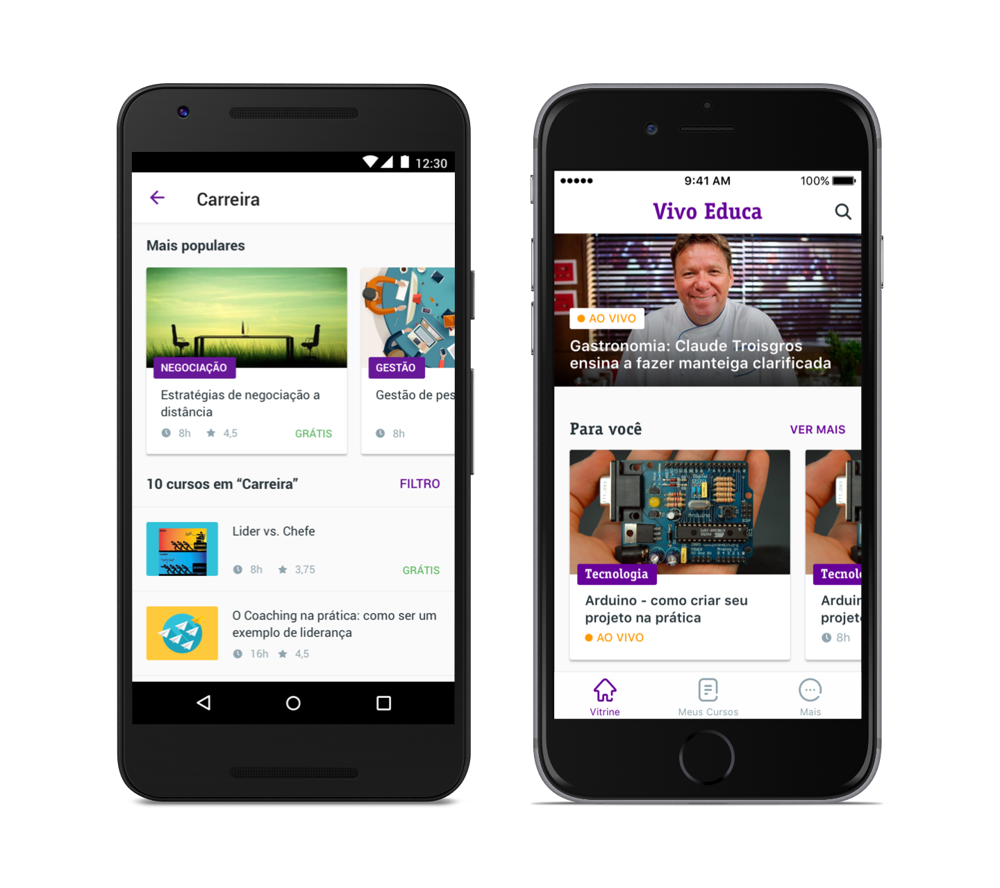

Vídeos
| Largura | Altura | Pixel Aspect Ratio | Screen Aspect Ratio | Observação |
|---|---|---|---|---|
| 1920 | 1080 | Square (1:1) | 16:9 | Full HD 1080p |
| 1280 | 720 | Square (1:1) | 16:9 | HD 720p |
| Especificações do arquivo e de áudio | ||||
| Container | MOV, MP4, AVI | |||
| Vídeo Codec | h.264 | |||
| Vídeo bitrate | 2500 kbps ou superior | |||
| Áudio Coded | AAC | |||
| Áudio bitrate | 96 kbps ou superior | |||
| Áudio samplerate | 44.1 ou 48 kHz | |||
| Canais | 2 | |||
| Áudio Level | -9dB ou superior | |||
| Tamanho do arquivo | Limite máximo de 1GB | |||
Banners dos cursos
Para criarmos uma experiência única em nosso produto, precisamos ajustar todo o conteúdo do curso para equilibrar as informações aos usuários. E o banner tem um papel fundamental nesse processo, principalmente por ser a primeira referência visual aos alunos. Sua imagem deve seguir as especificações técnicas abaixo.
| Resolução | 1280x720, com largura mínima de 640 pixels. Use sempre uma proporção de 16:9, pois é a mesma que estamos usando nos vídeos. |
| Extensão | JPG ou PNG |
| Tamanho do arquivo | Até 2MB |
As imagens devem ser diretas e claras, com uma composição única ou singular, sem muitos detalhes para não atrapalhar sua leitura. Não devem ser incorporadas os logos da instituição de ensino e nem mesmo textos por cima. Abaixo você encontre exemplos que você deve seguir e o que não fazer.
Exemplos de imagens
Materiais de apoio
Como forma de enriquecer nosso conteúdo dos cursos e aulas, você pode enviar até 3 materiais de apoio ao nosso aluno. Materiais digitalizados em arquivos PDF, exercícios sobre o conteúdo abordado para o aluno avaliar seu aprendizado e ainda um arquivo em áudio, que deve explorar algum assunto mais a fundo.
Arquivos ou documentos em PDF
Pense em enriquecer todo o conteúdo aprensentado em uma aula, com o conteúdo digitalizado ou criado como PDF. Assim o aluno pode facilmente fazer qualquer interação com o conteúdo abordado, junto com o material de apoio disponbilizado.
Exercícios
Você tem até 5 alternativas para trabalhar em cada questão. Tente sempre lembrar que este é um produto com foco na interação mobile, então perguntas e respostas muito extensas, não serão bem aproveitadas nesse formato.
Áudio ou podcast
| Áudio Codec | MP3 |
| Áudio bitrate | 96 kpbs ou superior |
| Áudio samplerate | 44.1 ou 48 kHz |
| Canais | 2 |